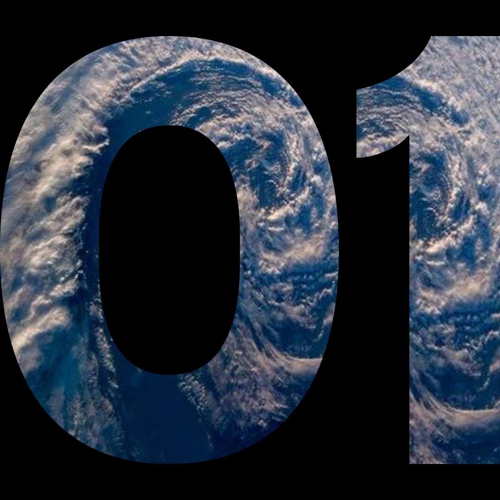
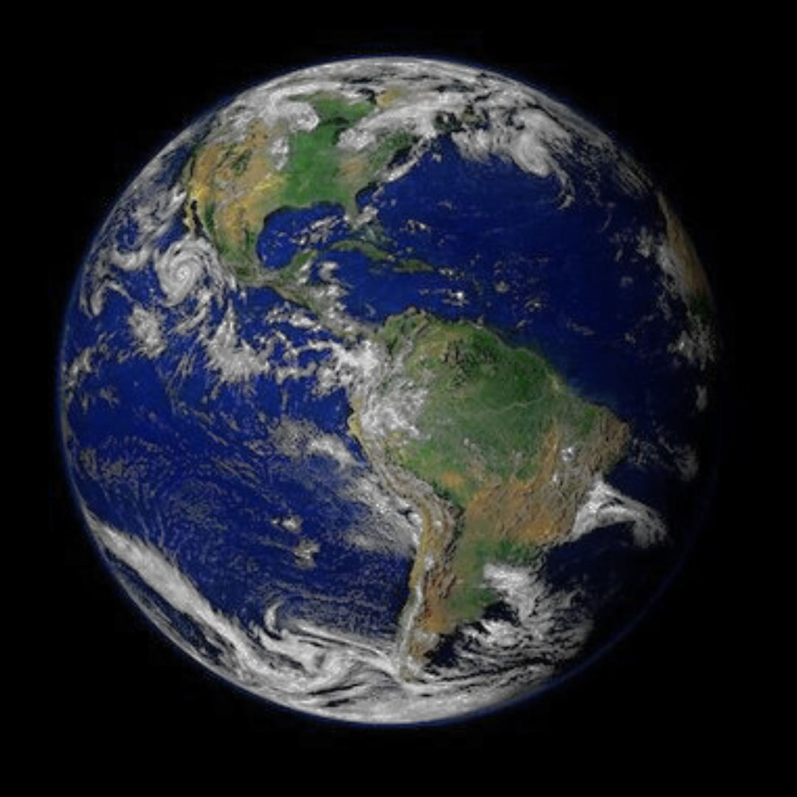
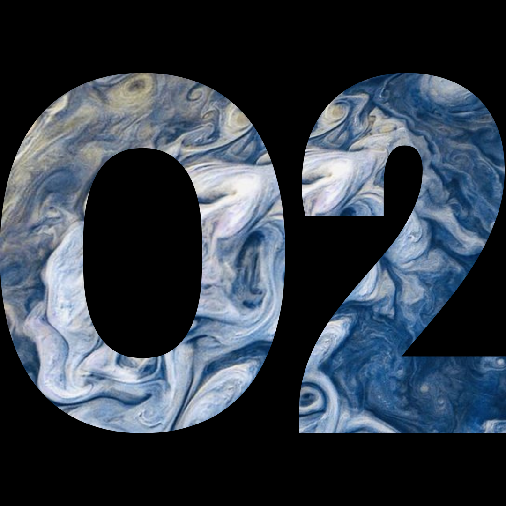
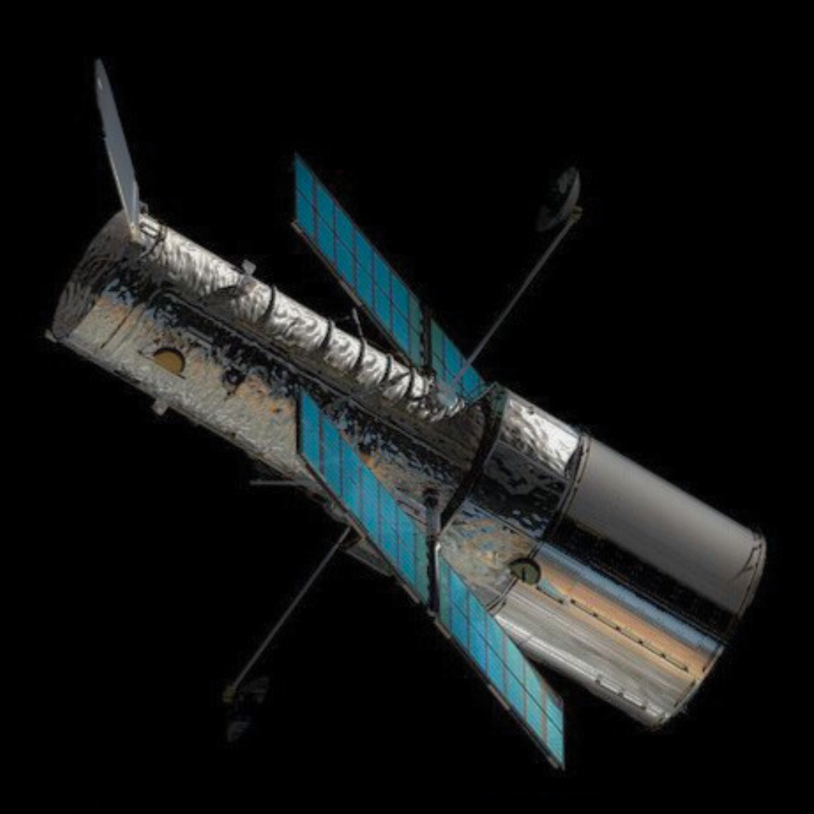

O QUE VOCÊ PROCURA?


Veja fotos em datas especiais
Escolha uma data especial para você e descubra o que a NASA capturou do universo nesse dia. Desde estrelas distantes até galáxias majestosas, o cosmos é revelado em imagens incríveis, sempre em constante movimento e transformação. O espaço nunca pareceu tão próximo!
Clique aqui!


Veja uma foto em uma data especifica
Selecione uma data e veja o que a NASA fotografou no dia escolhido. O universo nos brinda com imagens espetaculares todos os dias. Que tal descobrir o que estava acontecendo no espaço no seu aniversário, no dia do seu casamento, ou em outra data especial para você?
Clique aqui!